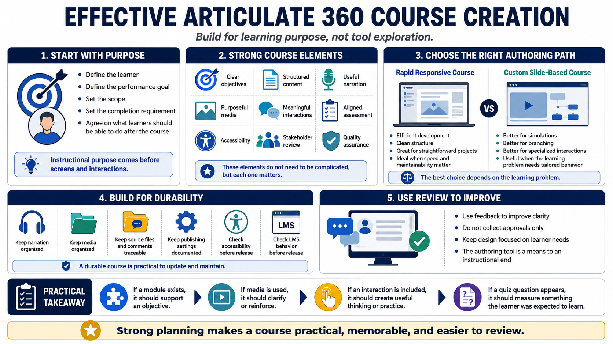

Course Summary and Key Takeaways
Connecting to LMS... Progress: in progress

Narration
Effective Articulate 360 course creation starts with instructional purpose, not tool exploration. Before choosing screens or interactions, define the learner, the performance goal, the scope, and the completion requirement. A course becomes easier to build and review when everyone agrees on what learners should be able to do after completing it.
Strong courses combine clear objectives, structured content, useful narration, purposeful media, meaningful interactions, aligned assessment, accessibility, stakeholder review, and quality assurance. None of these pieces need to be complicated, but each one matters. Weak planning can make a beautiful course ineffective. Strong planning can make a simple course practical and memorable.
The goal is not to use every feature. The goal is to build a learning experience that learners can understand, complete, apply, and revisit when needed. Rapid responsive courses may be ideal for some projects. Custom slide-based courses may be better for simulations, branching, or specialized interactions. The best choice depends on the learning problem.
A durable course is also maintainable. Keep narration, media, source files, comments, and publishing settings organized. Check accessibility and LMS behavior before release. Use review feedback to improve clarity instead of simply collecting approvals. When the design stays focused on learner needs, the authoring tool becomes a practical means to an instructional end.
The practical takeaway is simple: design decisions should be explainable. If a module exists, it should support an objective. If media is used, it should clarify or reinforce. If an interaction is included, it should create useful thinking or practice. If a quiz question appears, it should measure something the learner was actually expected to learn.